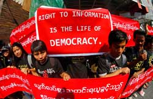
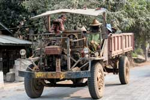
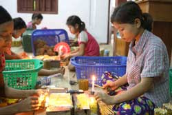

ELECTION NEWS
Chinese envoy discusses election with Myanmar junta chief
 A Chinese envoy has met Myanmar’s junta chief to discuss help for an election that the military aims to hold by January, days after the Myanmar leader secured a promise of support for the vote from its other main foreign backer, Russia.
A Chinese envoy has met Myanmar’s junta chief to discuss help for an election that the military aims to hold by January, days after the Myanmar leader secured a promise of support for the vote from its other main foreign backer, Russia.
Myanmar junta chief says election to be held by January 2026
 Myanmar will hold parliamentary elections by January next year, the leader of the ruling military said, without setting a date for a vote that the generals who seized power in 2021 will be hoping will end widespread opposition to their grip on politics.
Myanmar will hold parliamentary elections by January next year, the leader of the ruling military said, without setting a date for a vote that the generals who seized power in 2021 will be hoping will end widespread opposition to their grip on politics.
Myanmar junta announces schedule for December, January election
 Myanmar’s junta announced Wednesday it plans to hold a national election in four phases in December and January, the first time the military has outlined a detailed schedule for the controversial vote.
Myanmar’s junta announced Wednesday it plans to hold a national election in four phases in December and January, the first time the military has outlined a detailed schedule for the controversial vote.
Observers dismiss latest junta plan for Myanmar elections
Observers on Monday dismissed plans announced by Myanmar’s junta to hold elections in the war-torn country by January, saying the military won’t be able to hold the vote in territory it doesn’t control — about half the country — and that the public will view the results as a sham.
Myanmar to organize election in fewer than half of townships, parties say
 Myanmar is expected to organize an election next year in fewer than half of its 330 townships in the first phase of a staggered vote, a political party official said on Tuesday, with an insurgency by anti-junta forces likely to prevent the polls from opening in large parts of the country.
Myanmar is expected to organize an election next year in fewer than half of its 330 townships in the first phase of a staggered vote, a political party official said on Tuesday, with an insurgency by anti-junta forces likely to prevent the polls from opening in large parts of the country.
Junta chief vows to complete Myanmar census by year-end -- then hold elections
 During his recent visit to China, Myanmar’s junta chief Min Aung Hlaing promised top Communist Party officials that his regime will complete a census by the end of the year -- then hold “free and fair elections,” he revealed on Tuesday.
During his recent visit to China, Myanmar’s junta chief Min Aung Hlaing promised top Communist Party officials that his regime will complete a census by the end of the year -- then hold “free and fair elections,” he revealed on Tuesday.
Key election issues
Democratic reform
Myanmar’s democratic reform efforts have stalled and in some cases have taken a turn for the worse in the past five years. NLD attempts to amend the 2008 constitution to curb the political power of the military and allow Aung San Suu Kyi to become president have been blocked by military lawmakers. Read more...
Ethnic conflict
There are simmering conflicts with ethnic armies in other border regions too. The government has held three rounds of the Union Peace Conference and will hold another in August but it still appears far from achieving a political deal, even with ethnic armed groups that have signed a national cease-fire agreement. Read more...
Economy and poverty
Myanmar’s economy has grown at an annual rate of around 6 percent during the NLD’s time in office, but the COVID-19 pandemic and resultant government-ordered lockdown are expected to all but wipe out GDP growth for the current fiscal year. Read more...
International relations
Myanmar’s international standing, which had been elevated by its historic transition to democracy, has plummeted over the 2017 military-led crackdown on Rohingya Muslims in Rakhine State. Myanmar faces genocide-related charges at the International Court of Justice, the U.N.’s top court which settles disputes between nations. Read more...
Corruption
The NLD government has made some progress in tackling growing inequality and rising business costs in Myanmar, but corruption remains endemic in both the public and private sectors, and is sure to be pressing issue for the next administration. Read more...
Migrant laborers and refugees
The numbers of ethnic minority people displaced by conflict has only climbed under the NLD government. In addition to the hundreds of thousands of Rohingya displaced internally and in Bangladesh, some 200,000 mostly ethnic Rakhines have been uprooted by the current conflict in Rakhine State. Read more...